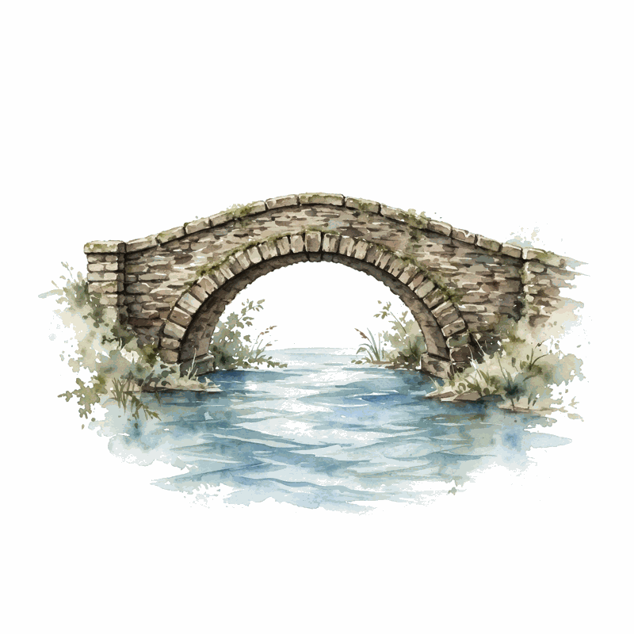
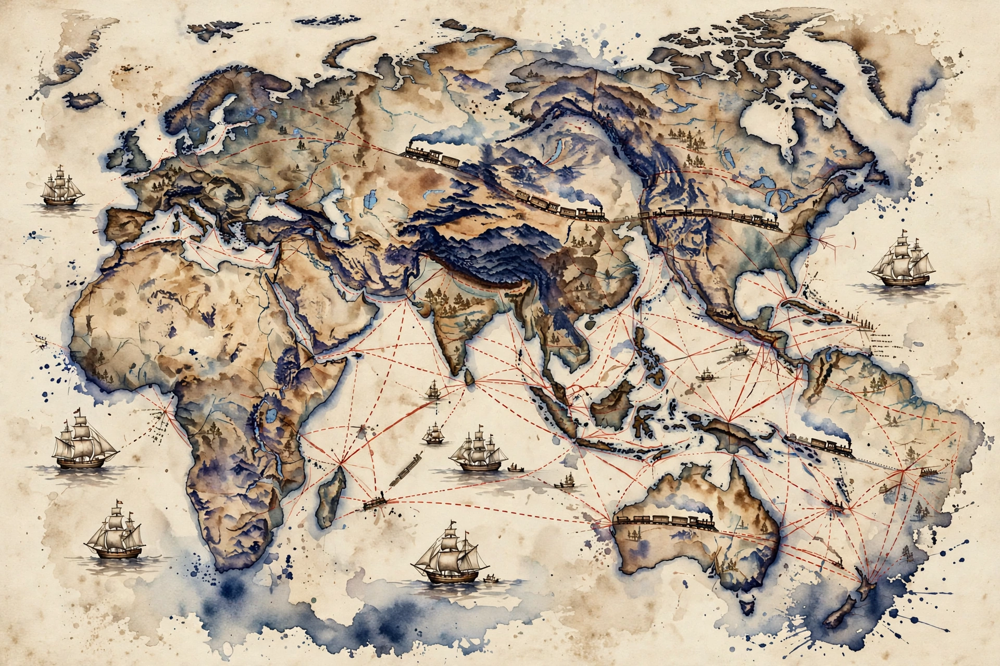

Conversations with Tyler · Episode companion
Niall Ferguson on Why We Study History
Recorded in July 2021, with Doom: The Politics of Catastrophe fresh off the press, this episode runs from Scottish pessimism to Bond, Collingwood, empire, and why libraries beat Google.
Scottish pessimism
~00:00
English pessimism does not exist in Scottish eyes, Ferguson says, because the English always expect to win the World Cup. Scottish pessimism is different: the phrase we are doomed only really works in a Scottish accent. It is the difference between Calvinists and Anglicans. He grew up in the Calvinist west of Scotland with a pessimism alleviated only by gallows humor. Scotland has the weather to match. Hearing The Sunny Side of the Street as a boy, he wondered where that was.

Not England
~00:02
Welsh pessimism? Ferguson is a student of it, spending time in Wales. After two decades in America he sees the Celtic periphery, Scotland, Wales, Ireland, as one thing really: they should unite under the name Not England. South Wales is like the west of Scotland, coal mines and dilapidated steelworks, pubs that feel the same. Wales is Scotland lite, the diet version, less morose, and the Welsh do not take their nationalism too seriously. Nobody really thinks Wales will ever be independent. Scotland, unfortunately, has a significant proportion who believe in a People's Republic of Scotland, a terrible idea in his view.
Marx
~00:04
Who made the most convincing case for British pessimism? One word: Marx. His vision of the Industrial Revolution came from observing the British Isles, and because the English are obsessed with class, London gave him the idea that class was the key to history. Das Kapital is a prophetic work about England, and about any country that follows England down the route of industrial revolution and class society. Ferguson cannot think of a more influential pessimistic view of history.
Bureaucracy
~00:06
Le Carre's deadening bureaucracy as our sad future? Ferguson is closer to that than to Marx, but bureaucracy is not an English pathology. The modern bureaucratic state is a German idea, idealized by the Prussians, imported into the English-speaking world along with the PhD and all the bad things about academic life. When it reached Britain, rather late, it immediately became an object of mockery. The funniest thing ever written about bureaucracy is the sitcom Yes, Minister. It has since become a general pathology of the Western democratic world.
Bond
~00:07
Is James Bond a Scottish prophet of doom? Bond was played by a Scot, Sean Connery, and conceived by Fleming with at least a streak of Scottishness. Ferguson tells the story of meeting Connery in Lyford Cay, introduced without warning, finding the great man in the middle of lunch wearing only a sarong. Ferguson mumbled that he learned everything about how to be a man from watching him in Glasgow cinemas in the 1970s. Connery raised an eyebrow and asked whether Ferguson knew he was a homosexual. Ferguson asked whether that explained the skirt. The ice broke.
The deeper point: Bond and Doctor Who are heroes of brains over brawn, compensations for dwindling economic muscle. Doctor Who is the only superhero who uses his brain, not his muscles. And Bond's villains, semi-freelancing criminals rather than Soviet employees, look prophetic now: that is how cyber warfare is waged, criminal gangs semi-officially working with the Kremlin, like the one behind the Colonial Pipeline attack.
The epistemic crisis
~00:13
What is the fundamental epistemic crisis of modernity? We are haunted by doomsday scenarios, seared into our subconscious by religion even though we think we are secular. The world will end in 12 years, no, 10. We also suspect, with Bostrom, that our technologies raised the probability of an extinction-level event, while we are promised a singularity of superhuman beings and AGI. Which scenario, extinction or singularity? Ferguson's historian instinct: each is very low probability indeed, and we should think more about the mundane scenarios in between.
Ferguson's scenario skepticism
His stated instinct, stylized. Not a forecast.
Glorious Revolution
~00:16
Which side in the Glorious Revolution? Everybody should ask themselves each morning: Whig or Tory? Are you a Jacobite? Ferguson wrote about the Dutch takeover in Empire: it is bizarre that the British Isles got taken over by a Dutch monarch at the behest of a faction motivated by religious prejudice. On religious grounds, he favored the Whigs, an ardent Protestant Lowlander, drawn to Jacobite romanticism but repelled by the practice.
Walter Scott
~00:17
To understand any of it, read Walter Scott, which Ferguson did during the pandemic after years of hearing that Scott was dull. The Waverley novels hold the fundamental dilemmas of the Glorious Revolution, the Civil War, and the 1745 rising. Scott explains the extraordinary trajectory: Scotland went from being Afghanistan in the 17th century, warring clans in the north, a Calvinist theocracy in the Lowlands, deeply violent and dysfunctional, to the most dynamic tiger economy in the world in the 18th, cradle of the Enlightenment, all the best ideas of Western civilization at once, from a tiny number of people in Glasgow and Edinburgh.
No book properly explains it, he says. But the lesson is Whiggish: the institutions imported from England, including the Dutch ones, got Scotland out of its Afghan predicament. Scott's own ambivalence, romantic about Jacobites, sober about bourgeois Glasgow, is the central tension of the culture, the same one Stevenson explores in Jekyll and Hyde and The Master of Ballantrae. Entrust your country to romanticism and it reverts to Afghanistan.
Scotland's trajectory, per Ferguson
His summary, stylized.
Collingwood
~00:24
The most profound philosopher of history? R. G. Collingwood. He captured what historians do better than anyone: the historical act is the reconstitution of past thought from such relics of thought as survive, juxtaposed with the thought of your own time, studied not for its own sake but for the light it sheds on your own predicament. Ferguson found it after crossing the Atlantic to Harvard, a sudden illumination. Collingwood's autobiography, published 1939, should be required reading.
A. J. P. Taylor
~00:26
What did Ferguson take from A. J. P. Taylor? The throwaway line:
Men only learn from history how to make new mistakes.
A. J. P. Taylor, via Ferguson · ~00:26
Taylor was his schoolboy hero. Ferguson applied to Magdalen, Oxford, believing Taylor was a fellow there. Taylor was long gone by the time Ferguson arrived. Taylor's prose belongs in the same league as Orwell's. His Origins of the Second World War is a masterpiece of polemical writing, but its method, strict adherence to the diplomatic documents, led to the appealing but wrong conclusion that Hitler was a traditional German statesman and the war an accident of misunderstandings. Taylor knowingly underplayed Hitler's ideological motivations for the contrarian argument. The antidote is Michael Burleigh's The Third Reich, which captures the political-religious, messianic quality of National Socialism that English-language biographies miss.
Quentin Skinner
~00:31
What did he learn from Quentin Skinner? How to be patronized. As a young fellow at Christ's College, Cambridge, Skinner told him that in the great chain of being, intellectual history was at the top and economic history at the bottom, the bottom feeders. The kind of thing said at high table in the early 1990s to put an upstart in his place. Still, Skinner insisted on contextualizing documents, on not reading texts as if handed down on stone tablets, and Ferguson admires him as a scholar.
Kings or queens
~00:32
Kings or queens? No preference. Mary, Queen of Scots, got herself into more trouble than almost any monarch he can think of, and the sample size is too small anyway. He worked the data on how monarchs end once: they come to a lot of sticky ends, women as well as men. He avoided royal history his whole career. English historians are supposed to write about Henry VIII. He once tried a Saxe-Coburg-Gotha dynasty book after the Rothschild book, drew a wonderful family tree showing one family holding nearly all of Europe's thrones by 1900, but the royal letters were gossip and hunting stories, far more boring than the Rothschild correspondence, and he fell asleep in the Windsor archives.
Northern Ireland
~00:35
What happens in Northern Ireland? Boris Johnson, the Disraeli of our time, not the Churchill, agreed to the unworkable Northern Ireland Protocol to get to the top of the greasy pole. The customs border in the Irish Sea is a terrible blow to Ulster Unionism and a win for Irish reunification, but Boris has only the haziest notions about Northern Ireland. Ferguson does not buy the warnings that the Troubles will return. That is bluff. The English no longer care about any of it, and indifference is the more powerful force. In fifty years, one Ireland is possible. The United Kingdom is shape-shifting. It has only had its current form for about a hundred years.
His own arc: Scottish nationalist at 15, ready to punch people over it. Young Thatcherite punk Tory at Oxford. Then the historian's view that Scotland got a great deal out of the Union. After fighting the 2014 referendum, he is despondent at making the arguments again. His message to the nationalists now:
try independence and see how you like it
Niall Ferguson, to Scottish nationalists · ~00:40
Rapid fire
~00:41
Boswell or Johnson? Boswell, because Ferguson identifies with him, sometimes feeling he is Kissinger's Boswell, trotting along writing down aphorisms. But Johnson has the better lines, and Boswell deserves the credit for giving them to him. Alasdair Gray over Irvine Welsh: better writer, Lanark is a great book. Lennon over McCartney: he cried when Lennon died, all the great songs are Lennon's, though Macca is a lovely man. Best American punk band? There is not one.
Punk was British.
Niall Ferguson · ~00:43
The Dead Kennedys get a B+. His musical education was John Peel's radio show, ten to midnight, punk and reggae. After the Sex Pistols: the Jam, the Clash, the Damned, the Buzzcocks.
The Kelvin Bridge
~00:44
His favorite bridge in Glasgow: the bridge over the River Kelvin near his school, Glasgow Academy, maybe boringly called the Kelvin Bridge. A lovely spot, walked to and from school in all weathers. Glasgow is a rather beautiful city, he says, to the surprise of some.
Libraries
~00:46
The Macintosh Library burning down is a great tragedy, because public libraries made him. Sent to the Mitchell Library as a schoolboy to write about the Thirty Years' War, he saw the shelves and realized history was an unmanageable quantity of data. That was when the challenge gripped him.
Libraries are better than Google.
Niall Ferguson · ~00:46
Print produced an enormous amount of content not designed to sell ads, and libraries became the organizing institutions of information, with cataloging systems designed only to connect the book in your hands with related books. Google sorts to sell ads. Library cataloging is a much-underrated contribution to civilization.
Tocqueville
~00:47
The strongest defense of liberalism? Tocqueville, always, over Mill and Hayek. An Oxford story: reading L'Ancien Regime in French in his first term, hard work with weak French, but the conversations with his tutor Angus Macintyre and near-contemporary Andrew Sullivan were seminal. Tocqueville's insight: liberty must be protected by nonobvious means, by things a liberal might not even approve of. Democracy in America shows why France could not be the United States, and what institutional supports made American liberty distinctive. Ferguson is, by his own admission, a philosophical ignoramus who needs a story, and Tocqueville's story clicked.
Keynes
~00:49
How does Ferguson feel reading Keynes? Awe. The General Theory was the hardest thing he had ever read. He read it cover to cover three times, taking notes. But he is out of sympathy with Keynes's Bloomsbury iconoclasm, the tearing down of Victorian verities, gold standard, free trade, posterity, which cleared a path for a failed socialist experiment and Labour dominance and stagnation. He is more Bloomsbury than he looks, with his own network of artists and musicians, but more sympathetic to the Victorian achievement. Keynes's redeeming feature: the heroic effort to keep Britain from going under in World War II, fighting Roosevelt's advisers as they tried to dismantle the British Empire.
The Empire
~00:55
His heretical position, held for at least twenty years:
the benefits of the British Empire outweighed the costs
Niall Ferguson · ~00:55
The argument is economic and counterfactual. The 19th-century empire became an empire of liberalism: free trade, free migration, free capital movement, and it turned away from slavery before others did. Compared with the available alternatives, including indigenous empires, it was a remarkably benign empire. Comparing it to the Third Reich commits category errors and refuses realistic counterfactuals. Empire is a book he could not publish today. Bruce Gilley's unpublished article makes the same argument, and Ferguson's only regret is that Gilley did not cite it. The view has made him a hate figure for the academic left, for whom imperialism is mandatory unmitigated evil, the opposite of Collingwood's faithful reconstruction of past thought.

India
~00:58
Cowen pushes on India: post-independence growth outran empire growth, and the empire invested very little in public goods. Ferguson answers with Tirthankar Roy's book, the best on this: large-scale investment in infrastructure, vastly more railroad, telegraph, and dock construction than in Qing China. Oriental empires invested far less. The real shortfall was primary education. The British trained a native elite to run the empire and left basic education unfunded, one reason India remains poor. And the counterfactual cannot be that the policies of the 1990s magically happened in the 1890s. The question is what comparable geographies did in the 1890s.
Snow Crash
~00:59
The most plausible dystopia in science fiction? Neal Stephenson's Snow Crash. Stephenson saw brilliantly that we would spend half our lives on the internet and our avatars would start having more fun than us. The juxtaposition of a breaking-down California, people online half the time, and great flotillas of illegal migrants. Brilliant book.
Mexico City
~01:00
What did he learn in Mexico City? His motivation was to see his daughter, unseen for nearly eighteen months. He learned she was fine. But you cannot help but learn: the populism of the left may get rewarded more than the populism of the right in Latin America, because Mexico will recover rapidly on America's coattails despite bad excess mortality, while Brazil faces a torrid time for which Bolsonaro will be blamed. Mexico City seemed more okay than he expected.
No more books
~01:01
No more books after the second Kissinger volume. That will make seventeen, quite enough, and he is not sure anybody reads books all the way through anymore. It is a fool's errand to change minds with 400-page volumes. The Kissinger book is worth writing: Central Committee transcripts, previously untouched, will illuminate the US-China relationship freshly. After that, at 57, with maybe two decades left, the priority is intellectual succession and institution building. Academic life has gone off the rails in ways he never imagined in the 1980s. New institutions are urgently needed, and that should strike terror in his enemies' hearts.
Watch the episode
~01:03
The full 64-minute conversation, recorded July 2021.
Nuggets of wisdom
- The phrase we are doomed only really works in a Scottish accent.
- Wales is Scotland lite: the diet version.
- The most convincing British pessimist is Marx.
- Bureaucracy is a German idea. Yes, Minister is the funniest thing written about it.
- Bond and Doctor Who compensate for dwindling economic muscle with superior brains.
- We are haunted by doomsday, seared into us by religion.
- Extinction and singularity are both low-probability. Think about the mundane middle.
- Ask yourself each morning: Whig or Tory? Are you a Jacobite?
- Scotland went from Afghanistan to tiger economy in a single century.
- History is the reconstitution of past thought, set against your own.
- Men only learn from history how to make new mistakes.
- Taylor's Hitler-as-bumbler comes from trusting only the diplomatic documents.
- In the Cambridge chain of being, economic history is the bottom feeder.
- Boris Johnson is the Disraeli of our time, not the Churchill.
- Boswell deserves the credit for giving Johnson the better lines.
- Libraries are better than Google: honest sorting against ad sorting.
- Tocqueville's liberty must be protected by nonobvious means.
- The General Theory, read three times cover to cover, with notes.
- Judge empires by counterfactuals: what were the available alternatives.
- After Kissinger: no more books. Build institutions instead.